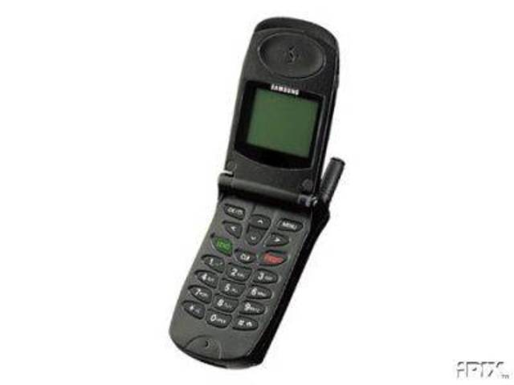
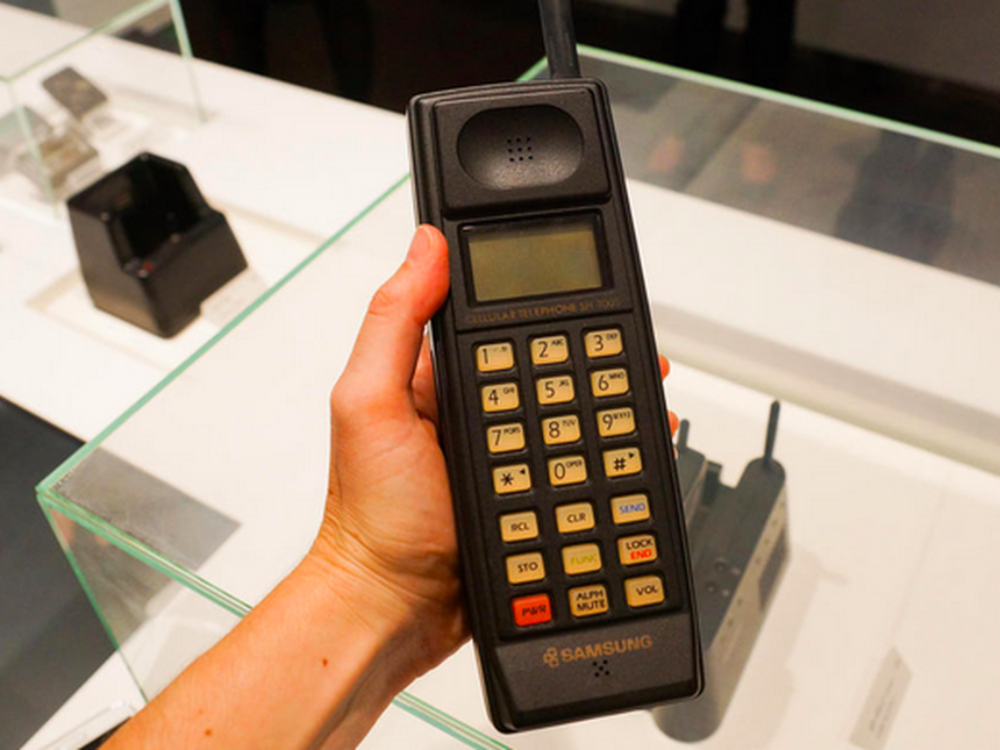

1988
Samsung SH-100
Fue el 1er celular de SAMSUMG era de color negro, robusto y tenia teclas gigantes.

Samsung SCH-800
1998
Samsung SCH-800
Después de lapsus de 10 años crearon el primer celular Flip Phone (con tapita)

1999
Samsung SPH-WP10
Fue el 1er ‘watchphone’ con el cual se podían hacer llamadas de media hora, al ser reloj eléctrico y por su tamaño se le considero como celular.

Samsung SPH-M2500
Samsung SPH-M2500
Fue el 1er celular con MP3, control remoto y con 32GB de memoria.

2010
Samsung Galaxy I7500
Fue el celular que tenia reconocimiento de teclado tactil y el 1er en usar el sistema operativo Android.

2011
Samsung Galaxy S II
Tiene mejoras en el sistema operativo, en la camra con luz LED, pantalla más grande y agrega teclado swype